A VIRGEM PRESENTE
NO MUNDO
OS VIDENTES
São pessoas
absolutamente normais, como todos nós. Na época em que iniciou as Aparições eram
jovens, gente simples, de família de agricultores, trabalhadores no campo, no
plantio de tabaco e uvas. E como todos os humanos, tinham o seu ideal na vida,
com seus projetos e imaginações que um dia esperavam concretizar, para a plena
alegria e satisfação pessoal de cada um.
DEUS NOSSO SENHOR que nos
conhece muito bem e inclusive sabe o nosso nome, conhecia os projetos dos jovens
e os escolheu para serem os “emissários e
interlocutores” da SANTÍSSIMA VIRGEM MARIA, e receber as mensagens com as
notícias, orientações e avisos do Céu, endereçados a humanidade de todas as
nações.
Então, à
medida que foram ganhando idade, mesmo ao longo das Aparições, cumprindo digna e
honestamente a Missão que NOSSA SENHORA lhes outorgou, os jovens não descuidaram
dos seus ideais e dos seus projetos particulares, e com este objetivo,
trabalharam interessadamente para que pudessem realizá-los de acordo com a
Vontade Divina. E assim, acompanhando a evolução dos acontecimentos pessoais no
quotidiano de cada um, eles também encontraram as pessoas que iam completar o
seu viver, e namoraram e se casaram. Hoje, todos eles formam famílias
verdadeiramente cristãs, com seus filhos, com seu trabalho particular e
primordialmente, continuando firmes e apaixonados a serviço da MÃE DE DEUS.
Vicka nasceu
em 03/Setembro/1964, casou-se com Mario Mijatovic e tem dois filhos: Maria e
Antônio. Vive em Krehin Grac, próximo a Mediugórie e continua atendendo aos
peregrinos. A RAINHA DA PAZ lhe aparece diariamente.
Marija nasceu
em 01/Abril/1965, casou-se com Paolo Lunetti e tem quatro filhos: Michele Maria,
Francesco Maria, Marco Maria e Giovanni Maria. Vive com a família na Itália na
cidade de Monza e vai com frequência à Mediugórie. Desde 1984, por meio dela, a
VIRGEM MARIA envia mensagens a Paróquia de Mediugórie, que em seguida, é
distribuída pelo mundo inteiro em dezenas de idiomas. Inicialmente a mensagem
era semanal, e a partir de 1987 passou a ser mensal em todos os dias 25. Nossa
MÃE SANTÍSSIMA lhe aparece diariamente.
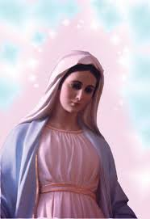
Ivan
nasceu em 25/Maio/1965, casou-se com Laureen Murphy e tem 3 filhos: Cristina
Maria , Mihayla e Daniel. Residem na maior parte do ano nos Estados Unidos e
outra parte em Mediugórie. Além disso, nos últimos 10 anos, Ivan tem sido
convidado e viaja por muitos países levando as mensagens da VIRGEM MARIA,
encontrando-se com presidentes, famílias reais, embaixadores, políticos,
personalidades do esporte, do cinema e também com pessoas pobres que não podem
viajar à Mediugórie. Ele também realiza encontros de oração em sua casa, onde
recebe e acolhe os participantes. A MÃE DE DEUS lhe aparece diariamente. Ivan
certa vez revelou que "Há
um motivo para eu estar vivendo nos Estados Unidos e Marija estar vivendo na
Itália"
Mirjana nasceu
em 18/Março/1965, casou-se com Marko Soldo e tem duas filhas: Maria e Verônica.
Vive com sua família em Mediugórie. Tem aparições anuais no dia 18 de março, e
aparições mensais nos dias 02 de cada mês desde 1987 quando juntamente com NOSSA
SENHORA rezam pelos incrédulos, isto é, por aqueles que ainda não conhecem o
amor de DEUS. Já recebeu os 10 Segredos.
Ivanka nasceu em
21/Junho/1966, casou-se com Rajko Elez e têm três filhos: Cristina, José e Ivan.
Vive com a família em Mediugórie. É a que menos aparece em público. Ela diz
simplesmente: “que devemos
rezar mais e vivermos as mensagens de Mediugórie”.
Têm aparições anuais de NOSSA SENHORA no dia 25 de junho. Já recebeu os 10 Segredos.
Jakov nasceu
em 06/Março/1971, casou-se com Anna Lisa Barozzi e tem três filhos: Arianna
Maria, David e Miriam. Vive com a família em Mediugórie e se dedica a atender
aos peregrinos. Tem aparições anuais de NOSSA SENHORA no dia 25 de dezembro. Já
recebeu os 10 Segredos.
OS MILAGRES
Muitos foram os milagres acontecidos
pela poderosa e eficaz intercessão de NOSSA SENHORA junto a DEUS, nas Aparições de
Mediugórie, e continuam a ocorrer até hoje. O SENHOR derrama caudalosamente o
Seu Divino Amor operando maravilhas para
testemunhar, sobretudo, a presença materna e carinhosa da nossa MÃE SANTÍSSIMA, sempre
disponível para atender a suplica de um de seus filhos que necessitam e buscam a
sua tão carinhosa proteção. Foram centenas e milhares de casos extraordinários,
que atestam de modo vigoroso e eloquente a presença diária da VIRGEM
MARIA, MÃE DE DEUS e Nossa MÃE.
OS CRÍTICOS E OS INIMIGOS
Todavia, em todas as
Manifestações Sobrenaturais sempre surgem às opiniões e as críticas
desfavoráveis, que colocam defeitos e envenenam os fatos, com a intenção
premeditada de mostrar descrença, deixando muitas pessoas que não possuem o
necessário conhecimento religioso, perplexas e inundadas por terríveis dúvidas.
Em Mediugórie não foi diferente,
as “asas negras da descrença”
atuaram e atuam vigorosamente com o mesmo intuito de
ridicularizar as verdadeiras e carinhosas visitas da MÃE DE DEUS. Com o maior cinismo,
eles classificam as Aparições diárias de NOSSA SENHORA como sendo falsas e invencionices,
preparadas e tramadas pelos sacerdotes franciscanos mancomunados com os videntes. Na
ausência de argumentos convincentes,os críticos assumindo posições que não lhes pertencem,
afirmam desdenhosamente "que não
tem sentido NOSSA SENHORA visitar todos os dias alguns jovens numa mesma Aparição"!
E mesmo não apresentando uma fundamentação baseada
em argumentos lógicos, insistem na afirmativa, dizendo: "Que não é possível e não é verdadeiro, é um complô
para atrair peregrinos, por que oficialmente a Igreja
ainda não aprovou as Aparições".
Nós que temos fé segura, não
podemos e nem devemos acolher “estes
insultos”, argumentos balofos gerados no interior de mentes corrompidas.
Devemos raciocinar com bom senso e colocar os fatos no seu devido lugar. E assim, com o
espírito decidido, partir para esclarecer os acontecimentos, fazendo a realidade emergir
das profundezas que a ocultam, mergulhando o nosso espírito fervorosamente no mistério
da nossa MÃE SANTÍSSIMA, das suas palavras, das suas Mensagens, buscando compreender
as razões e as necessidades que a MÃE evidencia, e trazê-las a superfície luminosa
do direito e da razão, e em função da realidade encontrada, compreender o que DEUS
espera dos seus filhos.
gerados no interior de mentes corrompidas.
Devemos raciocinar com bom senso e colocar os fatos no seu devido lugar. E assim, com o
espírito decidido, partir para esclarecer os acontecimentos, fazendo a realidade emergir
das profundezas que a ocultam, mergulhando o nosso espírito fervorosamente no mistério
da nossa MÃE SANTÍSSIMA, das suas palavras, das suas Mensagens, buscando compreender
as razões e as necessidades que a MÃE evidencia, e trazê-las a superfície luminosa
do direito e da razão, e em função da realidade encontrada, compreender o que DEUS
espera dos seus filhos.
Em primeiro lugar, sobre a Aprovação
Oficial da Igreja, ela só vai acontecer, depois que terminar as Aparições, quando serão
elaborados os processos administrativos e canônicos para apuração e completa elucidação
dos fatos. No momento, como é natural, a postura oficial da Igreja é de prudência e
discernimento. Entretanto, embora não exista uma Aprovação Oficial, existe sim a
simpatia oficial e a permissão das autoridades eclesiásticas, que inclusive
recomendam aos fieis "que visitem Mediugórie que é
um local ideal para orações".
As Aparições começaram como
todas as outras, causando emoção e despertando um profundo carinho e admiração
nos cristãos do mundo inteiro que amam DEUS. Os videntes são jovens simples, de
pouca idade e pouquíssima instrução, exatamente como tem ocorrido na maioria das
Manifestações Sobrenaturais. Mas, gentes dignas, ainda não envolvidas pelos perigosos
venenos do maligno. E por outro lado, pode-se perfeitamente observar pelos
diálogos durante as Aparições, que desde o início a VIRGEM MARIA revelou a
intenção de permanecer na companhia deles “o tempo que eles quisessem”. E porque
NOSSA SENHORA falou assim?
ELA falou assim por que está
acompanhando a nossa existência e vê, com tristeza, tudo o que está acontecendo
em nosso planeta, neste mundo que habitamos e vivemos.
Na vida, ocorre
diariamente, uma caudalosa e irrefreável influência maligna repetitiva, porque
vivemos num mundo repetitivo e ganancioso. É assim que no quotidiano de todos
nós, desde o acordar e levantar pela manhã, ir para o trabalho, verificar e solucionar
as pendências de cada dia e se organizar para superar as dificuldades, que são
atividades normais em cada pessoa, somos atacados e influenciados de modo
abominável e insistente. Sistematicamente as forças ocultas do maligno,
investe apresentando diversas e variadas frentes de ataque, seja na tentação
incisiva e direta, seja estimulando a malícia ou concupiscência, agredindo
violentamente o equilíbrio emocional, com o objetivo de tornar instável
o normal proceder, sugerindo caminhos obscuros que verdadeiramente
não edifica o bom senso e nem proporciona o êxito honesto e gratificante.
Os canais condutores da influência negativa
são muitos e variados, mas podemos citar como elementos altamente perigosos, alguns
programas e novelas na televisão, assim como o jornalismo escrito e falado excessivamente
livre, descarregando diariamente uma quantidade abominável de desconcertantes e
imorais informações, atingindo de maneira brutal as consciências em formação,
não devidamente preparadas para distinguir e separar nos diálogos e nas cenas, o
conteúdo útil e aproveitável, deixando de lado a escória e não olhando a malícia,
inserida por uma fantasia do diretor do programa ou pelo escritor do texto, ou
ainda, por uma maldade intencionalmente premeditada por ambos. E assim acontecendo, deixa de existir
a necessária preocupação de moralização dos costumes, pois confunde as mentes em
formação quanto ao cultivo do direito, da justiça e o amor fraterno, diante de uma
propaganda abusiva e imoral, enaltecendo a lascívia com o assédio pernicioso e
constante do sexo, e preconizando o enriquecimento a qualquer preço, para
conseguir bens e conforto material.
Por outro lado, o ateísmo ateu que
antigamente estava restrito aos países comunistas, hoje varre impiedosamente as consciências
do homem e da mulher em todas as partes, ganhando adeptos diariamente na edificação de um
convívio materialista bem distante de DEUS.
Então vejam, sem nos aprofundarmos em
outras considerações, "somente"realçando estas terríveis realidades, será que não são suficientes
para suplicarmos a presença diária da proteção Divina, para nos auxiliar e nos defender das
insídias do mal, e nos ajudar a permanecer mais alertas contra as ciladas de satanás
e dos seus asseclas?
Se estes argumentos ainda requerem
mais reforço, então observem a impressionante violência que campeia livremente em
nossos dias, sem freio e sem limites, trazendo apreensões, espanto e medo! Diariamente,
em qualquer parte, ela está generalizada, cruel e vergonhosamente mesquinha!
Violência do bandido contra as pessoas, violência no próprio povo, na ganância
de ganhar mais, na pressa de chegar primeiro, na exploração de costumes
indecorosos, na falta de pudor e de sensibilidade, violência por maldade
satânica e até no momento de extrema dor, quando a necessidade exige e procura
profissionais especializados que possam ajudar a minorar um sofrimento, e eles se
omitem, ou não são encontrados, ou são exploradores!
E neste ritmo assustador e
decepcionante, existe uma infinidade de exemplos negativos insuperáveis que
poderíamos continuar enumerando aqui, realçando a profundidade do abismo em que
a humanidade se encontra mergulhada. Mas não queremos ir mais longe, porque
verdadeiramente somente estes fatos já gritam aos ouvidos de DEUS, suplicando
por uma intervenção salvadora, por uma providência que faça aparecer e crescer o
juízo e a vergonha no povo que tão amorosamente o SENHOR inventou. E assim,
pedir ao PAI ETERNO para infundir respeito na humanidade, que seja cultivada a
dignidade e cresça e apareça de maneira honesta, o amor verdadeiro e puro,
inundando a vida das pessoas com a justiça plena, estabelecendo e exercitando o
direito, transformando o viver de cada dia numa imensa alegria, no prazer de nos
encontrarmos unidos num santo e irreparável ambiente acolhedor.
O CRIADOR ama tanto a
humanidade, que ELE somente deseja que nós, os seus filhos queridos, gerados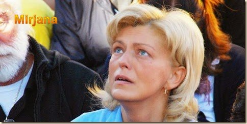
no Seu DIVINO CORAÇÃO, também o amemos com todas as nossas forças, com toda a
inteligência do nosso ser, porque é justamente no Amor do ETERNO PAI, que as
pessoas podem encontrar todos os tipos de “curas interiores”. E as curas são
verdadeiramente necessárias e imprescindíveis a todas as criaturas. O CRIADOR
quer que nos amemos a todos sem distinção, perdoando de coração aberto, não permitindo
que algum ressentimento ou mágoa crie um poderoso baluarte no interior do espírito,
por que o orgulho é um veneno terrível que atinge a nossa existência e nos adoece,
por dentro e por fora, tornando as vidas amargas, preocupadas com a revanche
e até com a vingança.
Então, é urgente e necessária
a mudança destes abomináveis costumes da humanidade, por que são terrivelmente
perigosos e desonestos, situados muito distante do amor necessário a vida.
Por tudo isto, não é difícil entender porque NOSSA SENHORA aparece todos os
dias em Mediugórie, para rezar com os videntes, suplicando a misericórdia e o amor
de DEUS. Nossa MÃE SANTÍSSIMA sempre tão carinhosa, maternalmente irmanada aos
jovens croatas está também rezando por todos nós, suplicando que sejamos fiéis
aos Mandamentos Divino, e nos estimula com sua amorosa presença, convidando
as pessoas a compreenderem a necessidade de praticar o amor, porque só o amor
constrói, só o amor dá a vida, só com amor é que poderá existir a paz, o bom
viver, e a tão almejada felicidade.
E por tudo isto, rezamos a
VIRGEM MARIA, que é a nossa querida e amada MÃE SANTÍSSIMA, que seja sempre bem-vinda,
que venha mais vezes, não só em Mediugórie, mas em todos os países, se for possível,
porque verdadeiramente, querida MÃE, todos nós necessitamos urgentemente das
orações, do carinho e da adorável presença da SENHORA em nossa vida.
HOJE EM MEDIUGÓRIE
A VIRGEM MARIA
continua aparecendo aos jovens videntes, às vezes com uma visita rápida de 3
minutos, outras vezes com uma visita mais longa, mas sempre presente, alegre e
repleta de amor, abençoando as pessoas e derramando graças para o mundo inteiro
e especialmente, para aqueles que vão visitá-la em Mediugórie.
Reze por nós SANTA MÃE DE DEUS
e tenha misericórdia das nossas fraquezas, infundindo ânimo em nosso espírito para
trilharmos firmes e resolutos a estrada do direito, da justiça e do amor
fraterno, a fim de santificar nossa vida e cumprirmos dignamente a missão que o
SENHOR DEUS nos concedeu na existência.
NOSSA SENHORA
DE MEDIUGÓRIE, ROGAI POR NÓS QUE RECORREMOS A VÓS.
CONVITE
Visite o PORTAL DO APOSTOLADO
no endereço abaixo, e tenha a oportunidade de conhecer os nossos Sites,
todos eles construídos e bem fundamentados na Sagrada Escritura, nas Tradições
Cristãs, nas Manifestações Sobrenaturais e na Vida e Obra dos Santos, com o
objetivo de informar somente a verdade.
http://www.apostoladosagradoscoracoes.com/

FOTOGRAFIAS
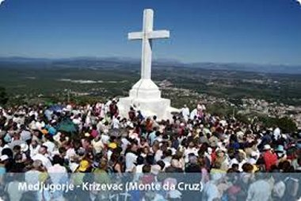

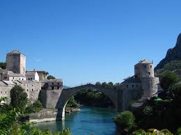
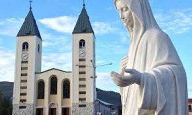
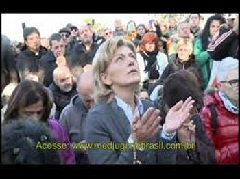
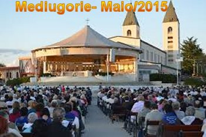
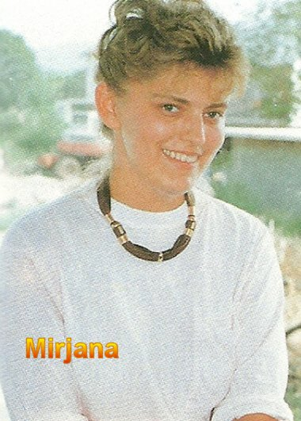
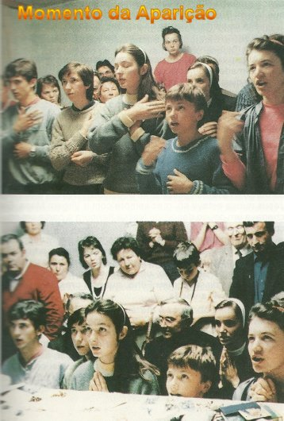
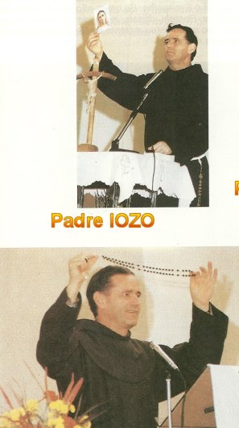
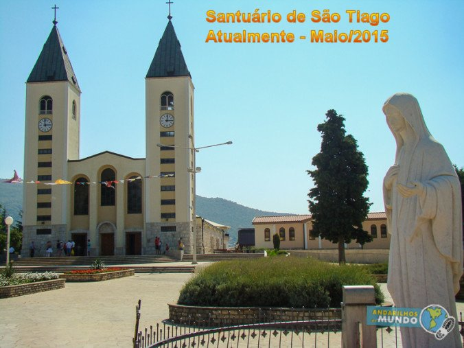
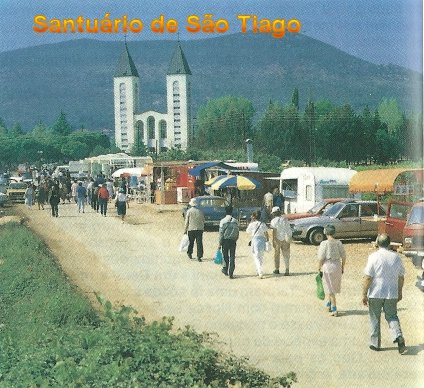
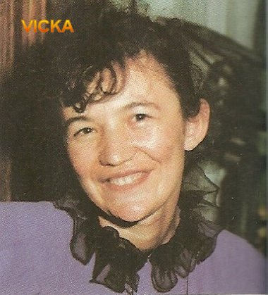
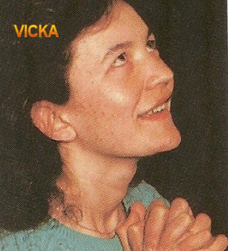
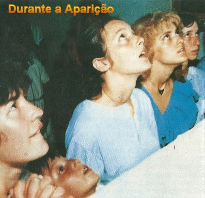
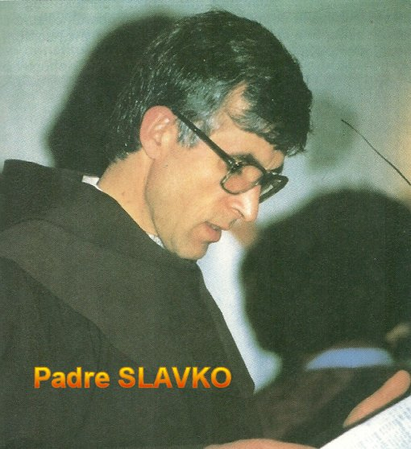
E-MAIL
Para comunicar-se
conosco, clicar na figura abaixo:

FIRMAS DE BUSCA


 PÁGINA ANTERIOR
PÁGINA ANTERIOR
RETORNA AO ÍNDICE